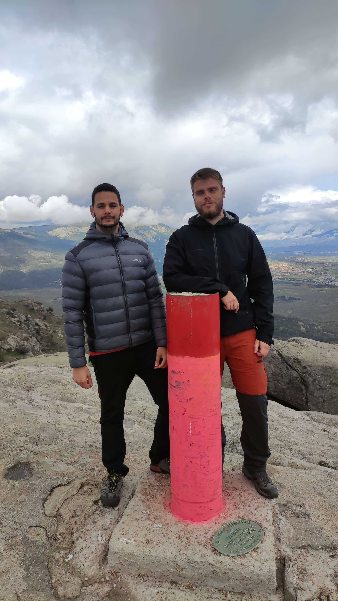

Machotas por la Silla de Felipe II

Subida desde la Silla de Felipe II hasta el collado de entrecabezas, de ahí a la Machota Baja y luego a la Machota Alta, donde se encuentra el Pico del Fraile.
04/04/2020
Introducción
Subimos un domingo de Semana Santa con un pronóstico del tiempo que indicaban mucha lluvia y viento. Aún así, en el parking nos encontramos con mucha gente. Es por eso que nos llevamos un cortavientos impermeable para no calarnos en la subida.
Aparcamos en el parking que está cerca de la Silla de Felipe II.
Subida al collado de entrecabezas
El camino que hay hasta la Silla de Felipe II estaba abarrotada de gente, pero después no nos encontramos con demasiada gente. ....
Subida a la Machota Baja
... La cima era muy bonita con vistas muy chulas.
Subida a la Machota Alta / Pico del Fraile
Aunque hasta ahora nos habíamos librado, en la subida a la Machota Alta nos pilló bastante agua, aunque solamente duró unos 10-15 minutos. La subida fue un poco monótona respecto a lo que vistas se refiere.
En la cima nos pilló muchísima agua y granizo que duró casi 20 minutos. Nos tuvimos que refugiar debajo de unas piedras.